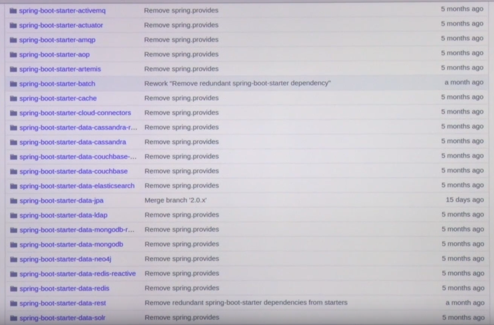
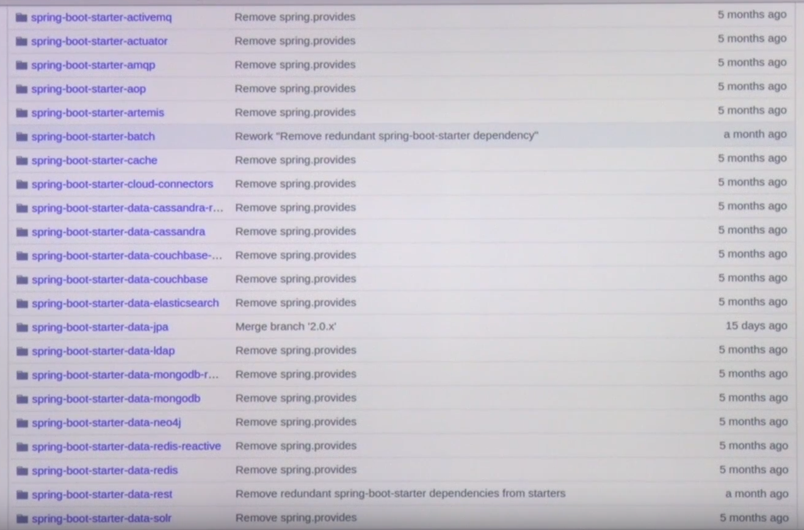

스프링부터 구성요소
- 빌드도구
- 그래들
- 메이븐
- 스프링 프레임워크
- 스프링부트 (1.5, 2.0) 는 스프링 프레임워크 (4.x, 5.x) 를 기반으로 동작
- 스프링부트
- 스프링부터 스타터: 의존성을 관리
================================================================================
스프링 부터 어젠다
- Build
- Coding
- spring boot starter
- Auto configuration
- Programming in spring environment
- Deploy
================================================================================
자바 프로젝트는 패키명으로 기본 프로젝트를 구성한다
================================================================================
스프링의 컨테이너 디폴트: 톰캣
================================================================================
Gradle: build.gradle 스크립트가 있다
================================================================================
Maven 의 빌드스크립트: pom.xml
================================================================================
- 프로젝트의 기본 코드구조
- gradle 기반 프로젝트 모습
- (1): gradle 의 빌드스크립트
- (2): 수동으로 로컬에 설치할 필요 없이, 프로젝트에 내장시켜서 빌드하기위해 필요
- (3): 리눅스, 유닉스 계열에서 실행되는 스크립트
- (4): 윈도우에서 실행되는 배치파일
- (5): 프로젝트의 기본 구성을 정의하는 파일
- 메이븐에서 가지고 있는 기본 구조
src/main/java
src/main/resources
src/test/java
- 빌드가 실행되서 컴파일 단계에서,
src/main/java
src/main/resources
이부분만 컴파일되고 패키징되고 배포된다
================================================================================
- 스프링부트에서 빌드하면, 실행가능한 JAR, 실행가능한 WAR 가 생긴다
================================================================================
- 실행가능한 JAR/실행가능한 WAR
- springboot.war 와 임베디드 컨테이너 (내장 컨테이너, 톰캣) 을 묶어서 다시 패키징 (boot repacage)
================================================================================
- 고전적인 WAR (고전적인 배포형태)
- 서버에 톰캣과 같은 WAS 설치
- WAS 의 특정 위치에, springboot.war 배포본을 업로드
- 톰캣이 springboot.war 파일을 읽어서 실행
================================================================================
- 스프링부트는 애노테이션 기반 작동
- @ComponentScan
- 앱의 컴포넌트 스캔을 어떤 범위로 하겠다고 지정
- @EnableAutoConfiguration
- 자동구성 활성화
- @Configuration
- 구성 bean 을 쓰겠다
- @ConditionalOn~~~
어떤 조건이 됐을때, 활성화를 하겠다
================================================================================
- SpringApplication.run
- SpringApplication 클래스 실행
- SpringApplication 클래스 안에서 spring ioc 컨테이너 (스프링 bean)
- 이 프레임워크에서 자기가 관리하는 객체
- SpringBootApplication 어노테이션이 붙은 위치를 기점으로 하향식으로 밑에 있는 패키지들을 탐색
================================================================================
(Spring Boot) Starter
- 의존성을 간결하게 함
- (Spring Boot) Starter 의 기본 동작 = spring-boot-autoconfigure 모듈 + spring-boot-dependencies 모듈
================================================================================
위의 코드 (${annotationApiVer} 같이 버전명시하는 부분도 있음) 가 아래처럼 간단하게 바뀐다
 ================================================================================
================================================================================

starter 들이 추가 되면, 자동구성 (auto-configuration) 이 활성되면서, 관례적인 bean 구성을 하게됨
================================================================================
스프링부트는 어플리케이션 속성을 외부에서 주입받아서, 어플리케이션이 동작할 때, 적용할 수 있음
1. 터미널에서 실행할 때, argument
2. 서버안에서 JSON 으로 선언한 구성파일
3. 운영체제의 환경변수
5. 속성파일들
================================================================================
- ComponentScan 어노테이션을 통해, Repository, Component, Service, Controller, Configuration 어노테이션이 붙은 클래스들을 탐색함
- 그 클래스들안에서 어떻게 속성을 읽어들이고, 속성이 어떻게 구성되어있는지 확인
- 그 클래스들을 스프링 bean 으로 등록함
- 등록된 스프링 bean 들은 ApplicationContext 가 가지게 됨
================================================================================
DI, IoC, Autowired 어노테이션
================================================================================
================================================================================
스프링 부트는 스프링 프레임워크 어플리케이션을 개발하기위해 사용되는 개발 플랫폼
================================================================================
================================================================================
================================================================================

starter 들이 추가 되면, 자동구성 (auto-configuration) 이 활성되면서, 관례적인 bean 구성을 하게됨
================================================================================
스프링부트는 어플리케이션 속성을 외부에서 주입받아서, 어플리케이션이 동작할 때, 적용할 수 있음
1. 터미널에서 실행할 때, argument
2. 서버안에서 JSON 으로 선언한 구성파일
3. 운영체제의 환경변수
5. 속성파일들
================================================================================
- ComponentScan 어노테이션을 통해, Repository, Component, Service, Controller, Configuration 어노테이션이 붙은 클래스들을 탐색함
- 그 클래스들안에서 어떻게 속성을 읽어들이고, 속성이 어떻게 구성되어있는지 확인
- 그 클래스들을 스프링 bean 으로 등록함
- 등록된 스프링 bean 들은 ApplicationContext 가 가지게 됨
================================================================================
DI, IoC, Autowired 어노테이션
================================================================================
================================================================================
스프링 부트는 스프링 프레임워크 어플리케이션을 개발하기위해 사용되는 개발 플랫폼
================================================================================